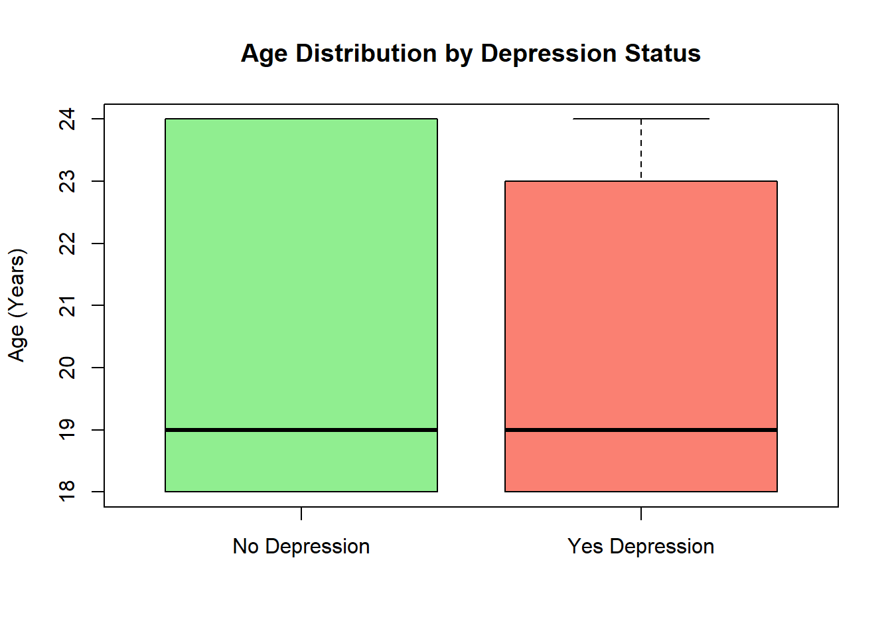
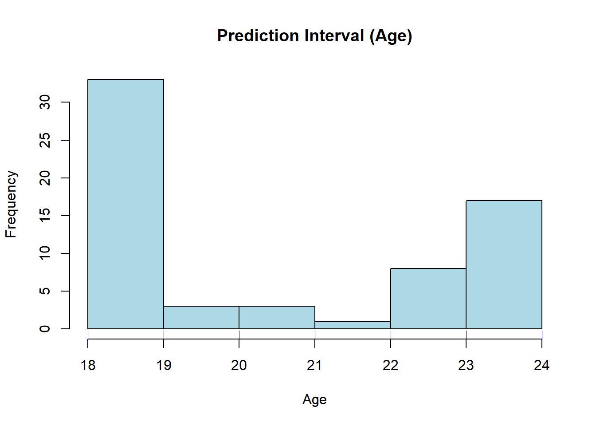
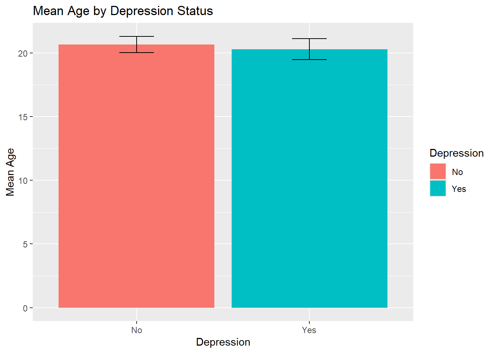

Show code
library("gplots") # contains barplot2 with error bars
library("dplyr") # for pipelines, group_by and summarize
library("ggplot2") # modern plotting package "grammar of graphics"The aim of this exercise is to demonstrate the estimation and interpretation of confidence intervals and to compare two statistical groups.
The experimental hypothesis is that Depression in students might be linked to their Age. We will compare whether the mean age differs between students who are depressed and those who are not.
We posit the following statistical hypotheses : regarding variance:
and regarding the mean :
The dataset contains data on university students. The analysis focuses on Age and Depression status.
The statistical analysis is performed using the R (R Core Team, 2024).
library("gplots") # contains barplot2 with error bars
library("dplyr") # for pipelines, group_by and summarize
library("ggplot2") # modern plotting package "grammar of graphics"url_raw <- "https://raw.githubusercontent.com/mohamedkhalilboujdey/Projet_R/main/mental_health.csv.csv"
df <- read.csv(url_raw)
df <- na.omit(df)# ... do ithead(df) StudentID Timestamp Gender Age Specialty Current_Year_Study
1 1 8/7/2020 12:02 Female 18 Engineering year 1
2 2 8/7/2020 12:04 Male 21 Islamic education year 2
3 3 8/7/2020 12:05 Male 19 BIT Year 1
4 4 8/7/2020 12:06 Female 22 Laws year 3
5 5 8/7/2020 12:13 Male 23 Mathemathics year 4
6 6 8/7/2020 12:31 Male 19 Engineering Year 2
CGPA Marital_status Depression Anxiety Panic_attack Treatment
1 3.00 - 3.49 No Yes No Yes No
2 3.00 - 3.49 No No Yes No No
3 3.00 - 3.49 No Yes Yes Yes No
4 3.00 - 3.49 Yes Yes No No No
5 3.00 - 3.49 No No No No No
6 3.50 - 4.00 No No No Yes Nobox1 <- subset(df, Depression == "No")
box2 <- subset(df, Depression == "Yes")boxplot(box1$Age, box2$Age, names=c("No Depression", "Yes Depression"),
col=c("lightgreen", "salmon"),
ylab="Age (Years)",
main="Age Distribution by Depression Status")
boxplot(Age ~ Depression, data = df)Let’s check the shape of the age distribution for the “No Depression” group.
hist(box1$Age, main="Age Histogram (No Depression)", xlab="Age", col="lightblue")We will estimate a prediction interval. In which age range do 95% of non-depressed students fall?
First, we calculate the mean, standard deviation (sd), N, and standard error (se) for the “box1” dataset (No Depression):
box1.mean <- mean(box1$Age)
box1.sd <- sd(box1$Age)
box1.N <- length(box1$Age)
box1.se <- box1.sd/sqrt(box1.N)Next, we estimate the 95% prediction interval (assuming a normal distribution):
box1.95 <- box1.mean + c(-1.96, 1.96) * box1.sd
box1.95[1] 15.64918 25.67389If the dataset is large enough, we can compare this with the empirical quantiles:
quantile(box1$Age, p = c(0.025, 0.975)) 2.5% 97.5%
18 24 Let’s visualize this interval on the histogram:
hist(box1$Age, main="Prediction Interval (Age)", xlab="Age", col="lightblue")
abline(v = box1.95, col="red", lwd=2)
rug(box1$Age, col="blue")
Theconfidence interval of the mean tells us the precision of the estimated mean age.
box1.ci <- box1.mean + qt(p = c(0.025, 0.975), df = box1.N-1) * box1.se
box1.ci[1] 20.02786 21.29521Null Hypothesis: Both groups have the same mean age.
Alternative: The mean age differs depending on depression status.
t.test(Age ~ Depression, data = df)
Welch Two Sample t-test
data: Age by Depression
t = 0.73062, df = 73.768, p-value = 0.4673
alternative hypothesis: true difference in means between group No and group Yes is not equal to 0
95 percent confidence interval:
-0.6491785 1.4008269
sample estimates:
mean in group No mean in group Yes
20.66154 20.28571 We also perform the F-test to compare variances:
var.test(Age ~ Depression, data = df)
F test to compare two variances
data: Age by Depression
F = 1.1395, num df = 64, denom df = 34, p-value = 0.6899
alternative hypothesis: true ratio of variances is not equal to 1
95 percent confidence interval:
0.6106334 2.0127169
sample estimates:
ratio of variances
1.139456 Interprétation : Look at the p-value of the t-test. * If p-value < 0.05: There is a significant difference in age.
Here is a modern method to summarize statistics using dplyr.
library("dplyr")
stats <-
df |>
group_by(Depression) |>
summarize(mean = mean(Age), sd=sd(Age), N=length(Age), se=sd/sqrt(N),
lwr = mean + qt(p = 0.025, df = N-1) * se,
upr = mean + qt(p = 0.975, df = N-1) * se
)
stats# A tibble: 2 × 7
Depression mean sd N se lwr upr
<chr> <dbl> <dbl> <int> <dbl> <dbl> <dbl>
1 No 20.7 2.56 65 0.317 20.0 21.3
2 Yes 20.3 2.40 35 0.405 19.5 21.1We use the statistics table to create a bar chart with confidence intervals.
library("ggplot2")
stats |>
ggplot(aes(x=Depression, y=mean, fill=Depression, min=lwr, max=upr)) +
geom_col() +
geom_errorbar(width=0.2) +
labs(title="Mean Age by Depression Status", y="Mean Age")
Repeat the analysis with other properties of the fruits, e.g. width and height. Create box plots, analyse distribution, create bar charts.
R Core Team (2023). R: A language and environment for statistical computing.